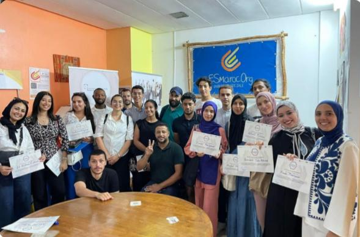
Événement
L'École d'Été EsMaroc
Chaque année, l'association EsMaroc rassemble la nouvelle génération...
Lire la suiteESMAROC accompagne la nouvelle génération d'entrepreneurs sociaux et de projets innovants au Maroc pour construire l'économie de demain.
Bénéficiaires accompagnés
Porteurs de projets soutenus
Startups financées
Jeunes insérés
Auto-entrepreneurs accompagnés
Régions d'intervention
Découvrez notre histoire, notre vision et notre engagement au service des jeunes et de l'entrepreneuriat au Maroc.
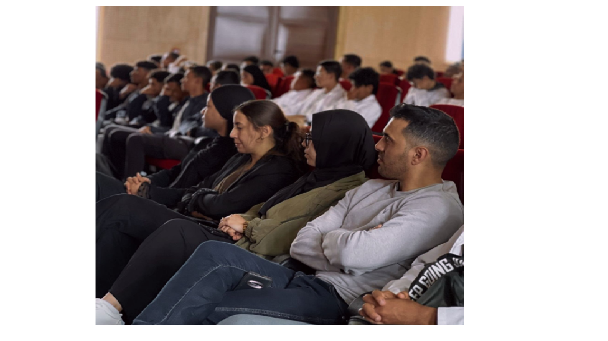
Créée en 2017, ESMAROC (Entreprise Sociale au Maroc) est une association marocaine engagée dans la promotion de l'entrepreneuriat, de l'employabilité des jeunes et de l'inclusion socio-économique durable.
À travers ses programmes d'accompagnement, de formation et d'incubation, l'association agit comme un acteur de terrain reliant les jeunes, les institutions publiques, les bailleurs internationaux et le secteur privé afin de transformer les opportunités en projets concrets et durables.
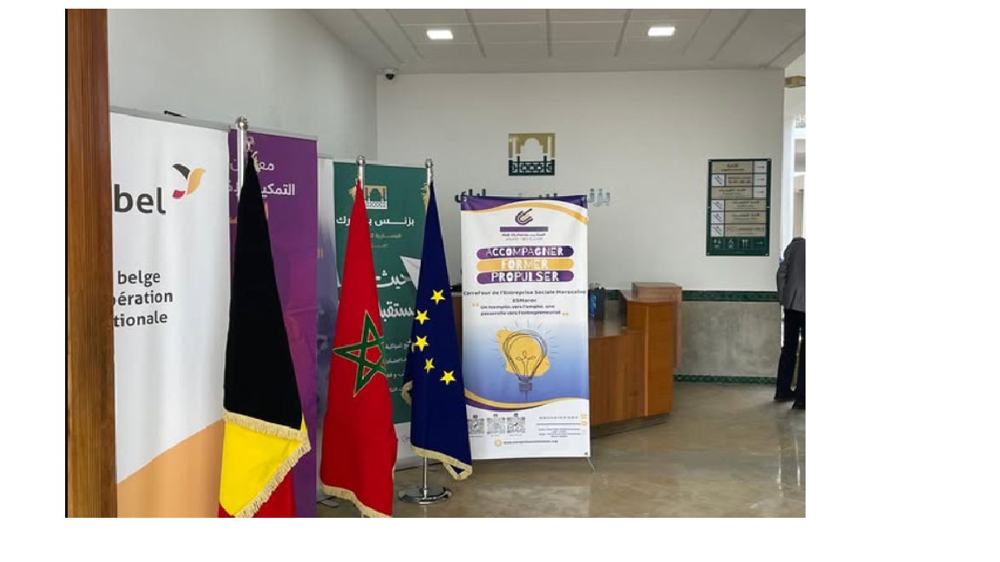
Création d'ESMAROC.
Lancement des premiers programmes d'accompagnement entrepreneurial.
Développement des hubs territoriaux et renforcement des partenariats institutionnels.
Participation à des programmes d'envergure internationale tels que DAPP.
Plus de 14 000 bénéficiaires accompagnés et une présence dans plusieurs régions du Maroc.
Construire un Maroc inclusif où chaque jeune peut accéder à des opportunités d'emploi, développer son potentiel entrepreneurial et contribuer activement au développement économique et social de son territoire.
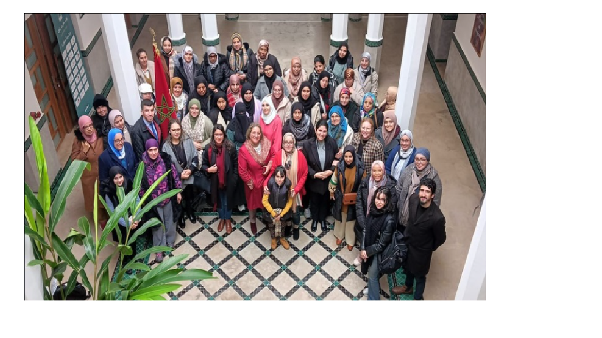
Accompagner les porteurs de projets dans la création et le développement de leurs activités.
Faciliter l'accès des jeunes au marché du travail.
Favoriser l'intégration économique des publics vulnérables.
Encourager les projets à impact social et environnemental.
ESMAROC accompagne les bénéficiaires tout au long de leur parcours entrepreneurial, depuis l'émergence de l'idée jusqu'à la pérennisation du projet.
Grâce à ses hubs et à ses programmes régionaux, ESMAROC intervient dans plusieurs régions stratégiques du Royaume afin d'assurer un accompagnement de proximité.
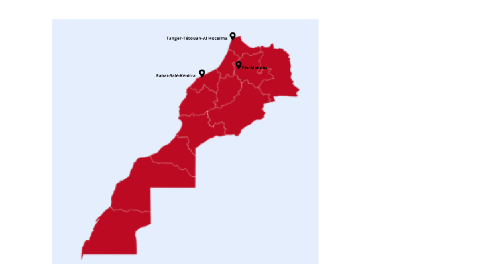
ESMAROC développe des programmes innovants pour renforcer l'entrepreneuriat, l'employabilité et l'inclusion socio-économique des jeunes.
Dar Libtikar est un programme d’incubation et d'accompagnement dédié à l'innovation sociale au Maroc. Porté par la Fondation Abdelkader Bensalah et déployé en partenariat avec ESMaroc.org, il transforme les idées citoyennes en projets durables, rentables et à fort impact local.
SPEED AFRICA est un programme d'accompagnement et d'accélération intensive conçu pour booster l'entrepreneuriat des diasporas et des personnes migrantes installées au Maroc, porté par ESMaroc.org en partenariat avec la GIZ.
Le REPA'ESS est une initiative majeure portée par ESMaroc.org visant à structurer un grand réseau panafricain pour le développement de l'Économie Sociale et Solidaire en Afrique.
LOG MED est un programme régional qui vise à renforcer l'inclusion économique des jeunes, porté par ESMaroc.org et financé par l'AICS.
Le programme DAPP II est une initiative internationale du Ministère des Affaires Étrangères Danois, déployée au Maroc par ESMaroc.org.
Restez informé des derniers temps forts de l'écosystème ESMAROC.

Chaque année, l'association EsMaroc rassemble la nouvelle génération...
Lire la suite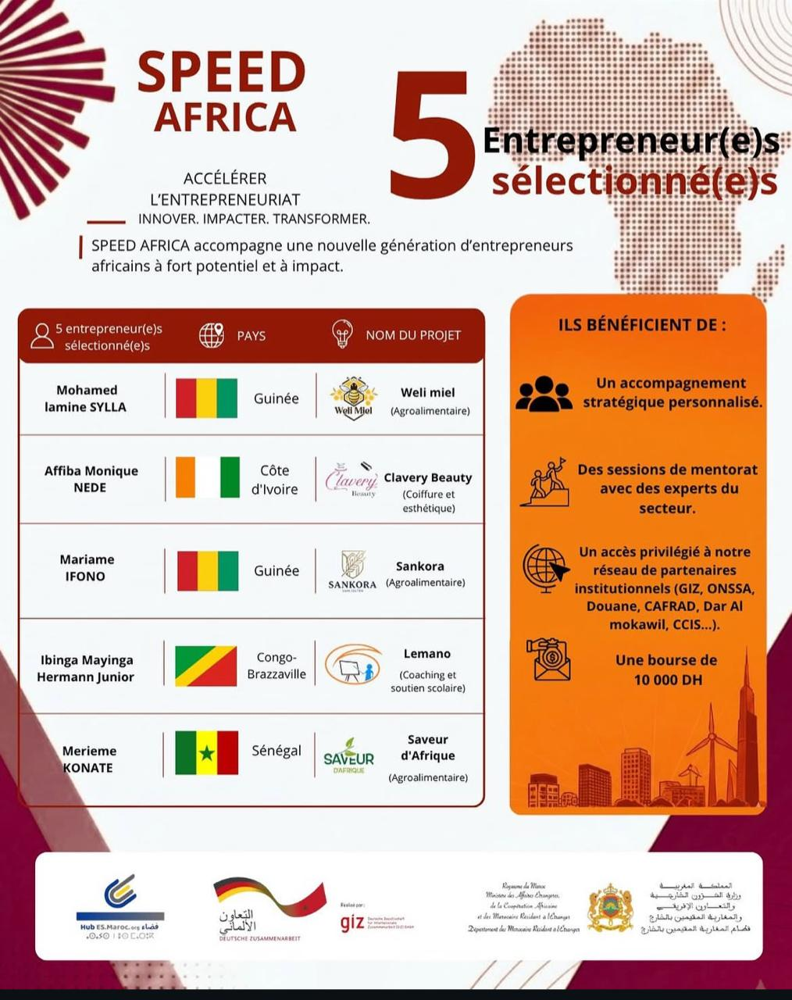
L'accélérateur des entrepreneurs migrants et de la diaspora africaine au Maroc.
Lire la suiteRevivez l'ambiance de nos bootcamps, ateliers collaboratifs et pitch days.
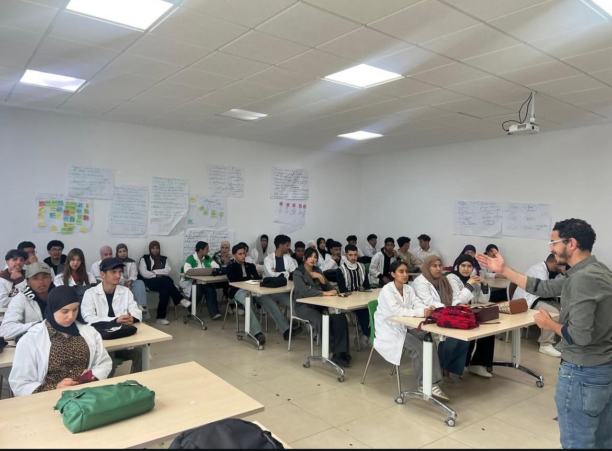
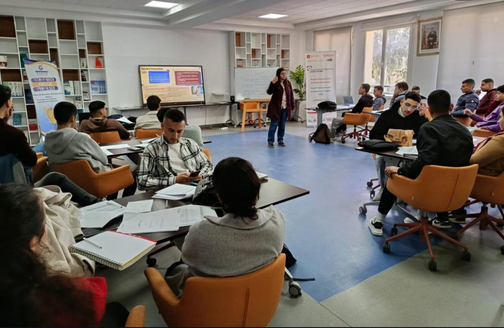
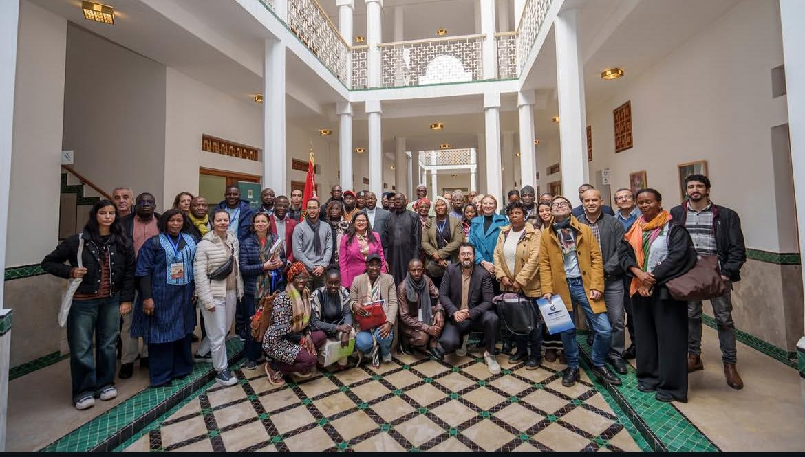
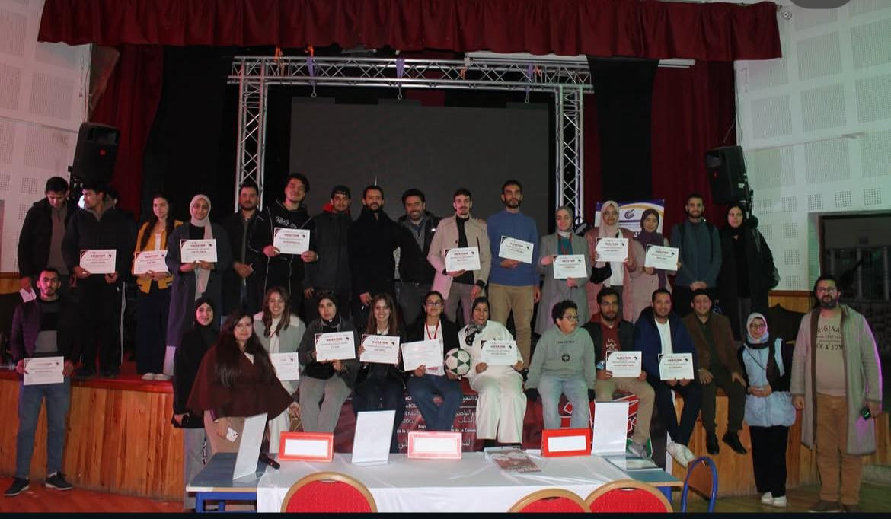
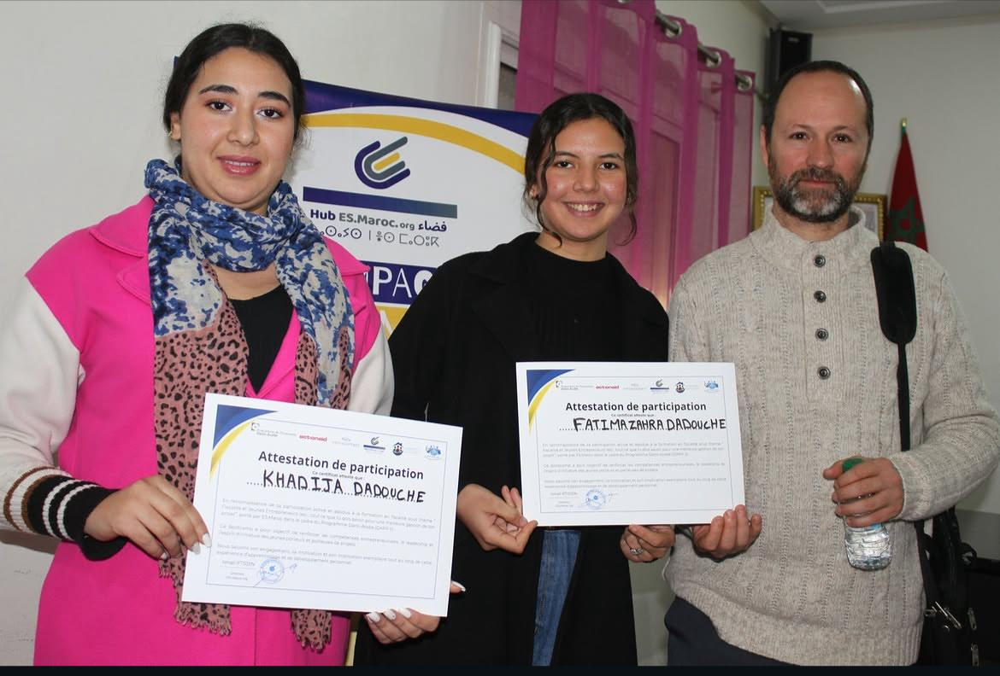
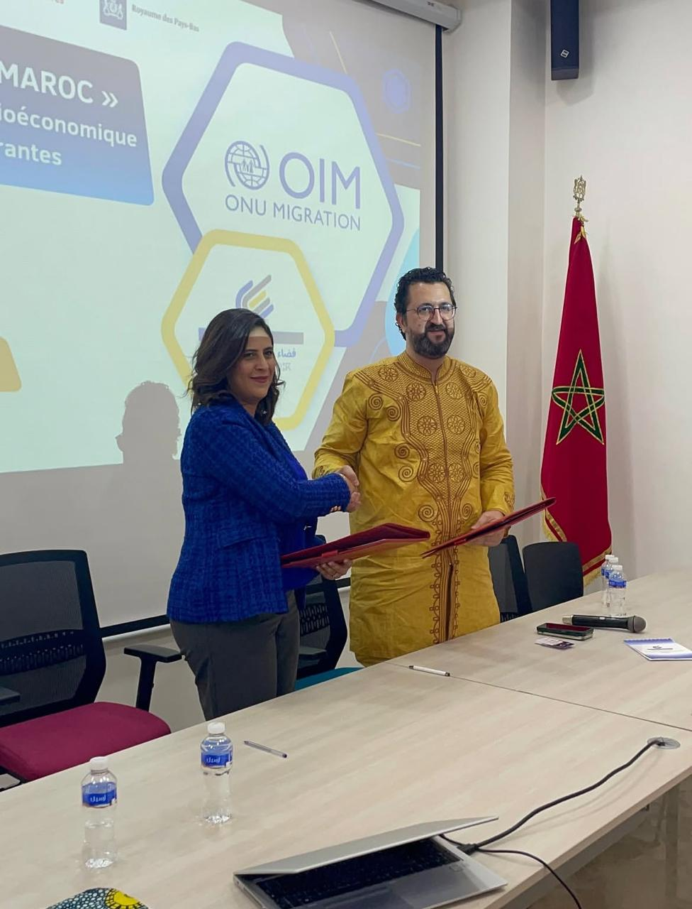
Une question ? Un projet à nous soumettre ? Nos équipes reviennent vers vous sous 48h.
Rejoignez un réseau dynamique d'innovateurs sociaux au cœur du Maroc.
Un écosystème solide soutenu par des acteurs majeurs nationaux et internationaux.